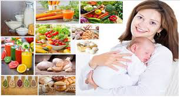
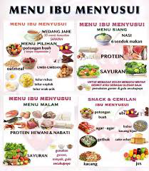

Cara asupan nutrisi bagi ibu


- Makan makanan yang beraneka ragam yang mengandung karbohidrat, protein hewani, protein nabati, sayur, dan buah buahan. (makanan gizi seimbang). Serta asupan makanan seperti sayuran hijau seperti daun katuk bagus untuk menambah produksi ASI.
- Tidak ada pantangan makanan apapun bagi ibu, selama ibu tidak memiliki alergi terhadap suatu makanan.
- Kebutuhan air minum pada ibu menyusui pada 6 bulan pertama adalah 14 gelas sehari dan pada 6 bulan kedua adalah 12 gelas sehari.